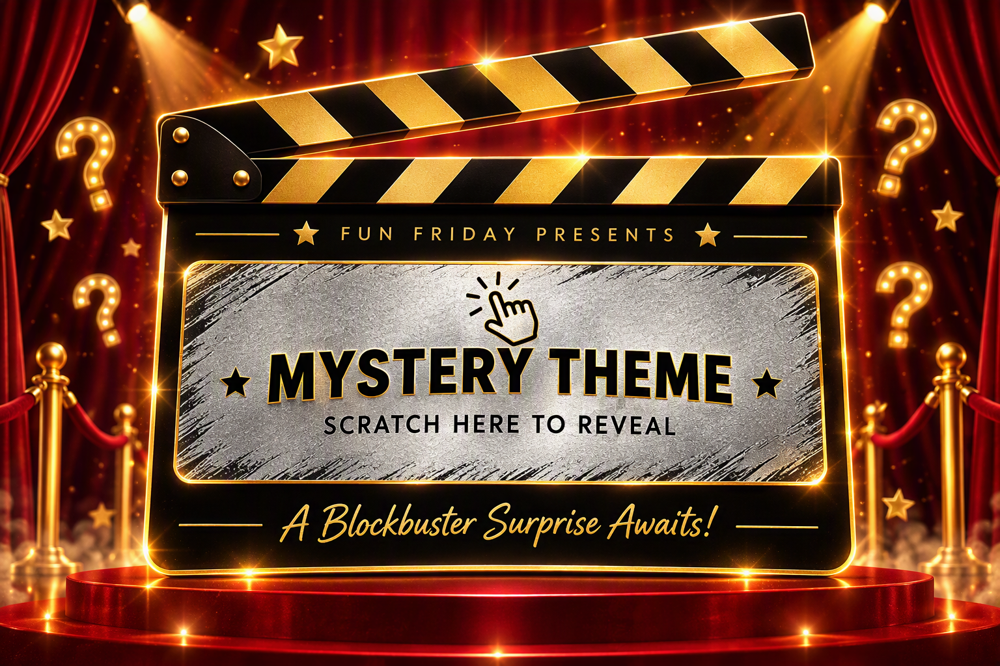
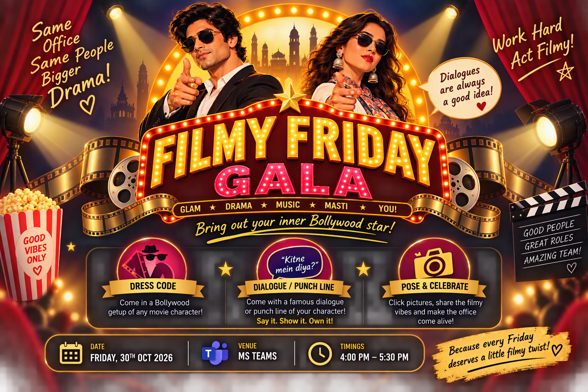

★ THE OFFICE PREMIERE ★
Scratch the silver Mystery Theme panel to uncover the full Filmy Friday Gala invitation.


Scratch the silver panel to reveal the surprise!
Friday, 30 October 2026 · 4:00 PM – 5:30 PM · MS Teams Dress Filmy. Speak Iconic. Own the Screen!